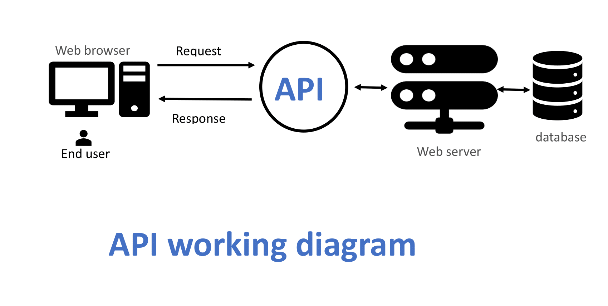

API
Aplication Programming Interface is a collection of communication protocols. An API, or Application Programming Interface, is like a translator that helps different software programs talk to each other. It provides a set of rules and tools that developers can use to make their applications work together smoothly. By using APIs, developers can easily add features to their software without having to write all the code from scratch. Think of an API as a middleman. When you make a request, the API takes it, passes it to the service provider, and then brings the response back to you. This makes it easier for programs to share information and perform tasks together. APIs are used everywhere in software development, whether it's for operating systems, databases, hardware, or web applications. While a Graphical User Interface (GUI) helps users interact with software visually, an API helps developers access and use web tools and services efficiently, making the whole process of building and improving software much simpler.
An Application programming interface is a software interface that helps in connecting between the computer or between computer programs.
API working procedure:
API Architecture
The architecture of an API refers to the framework and rules that dictate how APIs are designed and implemented. These architectures define how data is exchanged between different software components and outline the protocols, structures, and constraints that govern the API's operation. API architecture, in its simplest form, is the blueprint or design that governs how an API is structured, organized, and implemented. It's like the architectural plans for a building - it outlines the different components, their interactions, and how they fit together to create a cohesive and functional whole.
Types of APIs
There are five types of API architecture, they are
- Web APIs
- Websocket APIs
- Library based APIs
- Class based APIs
- Hardware APIs
1. Web APIs
Web API architecture refers to the framework and design principles used to create and implement APIs that are accessible over the internet. This architecture defines how web APIs are structured, how they handle requests and responses, and how they interact with other web services and applications. A Web API also called Web Services is an extensively used API over the web and can be easily accessed using the HTTP protocols. A Web application programming interface is an open-source interface and can be used by a large number of clients through their phones, tablets, or PCs. Here are the key components and types of web API architecture:
Key Components of Web API Architecture
- Endpoint: URLs that represent resources (e.g., https://backse09.com/backend). Each endpoint corresponds to a specific function or data entity.
- HTTP Methods: Standard methods like GET, POST, PUT, DELETE to perform actions on resources. GET retrieves data, POST creates new resources, PUT updates existing resources, DELETE removes resources.
- Request and Response: Clients send requests to the API, which processes them and returns a response. Requests and responses typically use JSON or XML for data interchange.
- Headers: Provide metadata about the request or response, such as content type, authentication tokens, etc.
- Status Codes: HTTP status codes indicate the result of the request (e.g., 200 OK, 404 Not Found, 500 Internal Server Error).
- Authentication and Authorization: Mechanisms to verify user identity (e.g., OAuth, API keys) and control access to resources.
- Rate Limiting: Limits the number of requests a client can make in a given period to prevent abuse.
Types of web APIs Architecture
There are some architecture for web APIs which are-
- REST: Standard for Representational State Transfer is a Stateless, client-server architecture. Uses standard HTTP methods and operates on resources identified by URLs. REST architecture follows principles like scalability, uniform interface, and resource-based interactions. REST stands for Representational State Transfer, and follows the constraints of REST architecture allowing interaction with RESTful web services. It defines a set of functions (GET, PUT, POST, DELETE) that clients use to access server data.
- RPC: The remote procedural call (RPC) protocol is a simple means to send multiple parameters and receive results. RPC APIs invoke executable actions or processes, while REST APIs mainly exchange data or resources such as documents. RPC can employ two different languages, JSON and XML, for coding; these APIs are dubbed JSON-RPC and XML-RPC, respectively.
- SOAP: Standard for Simple Object Access Protocol is Protocol-based architecture using XML for message format. Highly extensible with built-in error handling and security features. Operates over various protocols like HTTP, SMTP, and more. The simple object access protocol (SOAP) is a messaging standard defined by the World Wide Web Consortium and broadly used to create web APIs, usually with XML. SOAP supports a wide range of communication protocols found across the internet, such as HTTP, SMTP and TCP/IP. SOAP is also extensible and style-independent, which enables developers to write SOAP APIs in varied ways and easily add features and functionality. The SOAP approach defines how the SOAP message is processed, the features and modules included, the communication protocol(s) supported and the construction of SOAP messages.
- GraphQL: An alternative to REST, allowing clients to request exactly the data they need. Uses a single endpoint and a query language to fetch and manipulate data. Can reduce the number of requests needed and improve performance. GraphQL is an open-source data query language for APIs and It is a server-side runtime for executing the query. The server's GraphQL runtime takes care of executing the query and ensuring that the right data is fetched and sent back.
2. Websocket APIs
WebSocket is bidirectional, a full-duplex protocol that is used in the same scenario of client-server communication, unlike HTTP it starts from ws:// or wss://. It is a stateful protocol, which means the connection between client and server will keep alive until it is terminated by either party (client or server). After closing the connection by either of the client and server, the connection is terminated from both ends. WebSocket is a bidirectional communication protocol that can send the data from the client to the server or from the server to the client by reusing the established connection channel. The connection is kept alive until terminated by either the client or the server.
3. Library APIs
A library-based API refers to an Application Programming Interface that is provided as part of a software library or package. This type of API allows developers to use predefined functions, classes, and methods to interact with and manipulate the functionality provided by the library. Library-based APIs are typically included in programming languages or frameworks and are designed to simplify and standardize common tasks, enabling developers to build applications more efficiently.
Library-based APIs are essential tools in software development, providing developers with powerful, reusable components that simplify the development process. By leveraging these APIs, developers can build robust applications more efficiently and maintain a higher standard of code quality.
For example-
Third-party libraries are available to extend the capabilities of a programming language.
Benefits of Using Library-Based APIs
- Productivity: By using predefined functions and classes, developers can save time and effort, leading to increased productivity.
- Reliability: Libraries are usually well-tested and maintained by a community or organization, ensuring their reliability and stability.
- Maintainability: Using standardized libraries makes code easier to maintain and update, as the same API can be reused across different projects.
- Performance: Libraries are often optimized for performance, allowing developers to leverage high-performance code without needing to implement it themselves.
4. Class based APIs
A class-based API refers to an Application Programming Interface that is designed around classes and objects, following the principles of object-oriented programming (OOP). In a class-based API, functionality is organized into classes, which encapsulate data and behavior, allowing developers to create objects and interact with them through methods and properties. This approach promotes modularity, reusability, and maintainability in software development.
Class-based APIs provide a robust framework for building applications using object-oriented principles. They enable developers to create modular, reusable, and maintainable code by organizing functionality into classes and objects. This approach not only improves code quality but also simplifies the development and maintenance of complex software systems.
For example-
Benefits of Using Class-Based APIs
- Reusability: Classes and objects can be reused across different parts of an application or in different projects, reducing redundancy.
- Maintainability: The modular structure of class-based APIs makes it easier to manage and update code, as changes in one part of the system are less likely to impact other parts.
- Scalability: Class-based design supports scalable software architecture, as new features can be added by creating new classes or extending existing ones.
- Clarity: Clear and organized code structure, where the behavior and state are logically grouped into classes, improves code readability and comprehension.
Key Characteristics of Class-Based APIs
- Encapsulation: Data and behavior are bundled together within classes, encapsulating the internal state and providing a public interface for interaction. This hides the internal complexity and ensures that the internal state can only be accessed or modified through well-defined methods.
- Inheritance: Classes can inherit from other classes, enabling the reuse of code and the creation of hierarchical relationships. Inheritance allows for the extension and modification of existing functionality without altering the original class.
- Polymorphism: Polymorphism allows objects of different classes to be treated as objects of a common superclass. This enables the design of flexible and reusable code that can work with objects of different types in a uniform manner.
- Abstraction: Abstract classes and interfaces define a contract for subclasses to implement, promoting a clear separation between the definition and implementation of behavior. This allows developers to focus on high-level design without getting bogged down in implementation details.
5. Hardware APIs
Hardware APIs are interfaces that allow software applications to interact with hardware components. They provide a standardized way for software to communicate with hardware devices, enabling developers to control and use hardware functionalities without needing to understand the low-level details of the hardware's operation. Hardware APIs abstract the complexities of hardware interactions and provide higher-level functions that are easier to use.
Hardware APIs are essential tools that enable software applications to interact with hardware components. They provide a standardized and simplified interface for controlling and communicating with hardware, making it easier for developers to build applications that leverage hardware functionalities. By abstracting the complexities of hardware interactions, hardware APIs help ensure compatibility, performance, and ease of development across various devices and platforms.
For example-
- Many operating systems provide APIs for interacting with hardware components. Like
- Windows API (WinAPI) provides functions for interacting with hardware devices, such as printers, displays, and storage devices.
- POSIX API (used in Unix-like operating systems) provides standardized interfaces for interacting with hardware. -
Device drivers expose APIs that allow software to communicate with specific hardware components. Like
- GPU drivers provide APIs for rendering graphics and performing computations on the GPU.
- Network drivers provide APIs for sending and receiving data over network interfaces. -
APIs are available for interacting with peripheral devices such as keyboards, mice, cameras, and USB devices. Like
- USB API allows software to communicate with USB devices connected to the system.
- Camera API allows applications to control and capture images from cameras. -
Embedded systems often provide APIs for interacting with hardware components on microcontrollers and other embedded devices. Like
- Arduino provides a set of APIs for interacting with sensors, motors, and other hardware components connected to Arduino boards.
- Raspberry Pi GPIO API allows developers to control GPIO pins on a Raspberry Pi for interacting with external hardware.
Benefits of Using Class-Based APIs
- Ease of Development: Hardware APIs simplify the development process by providing high-level functions to interact with hardware, reducing the need for low-level programming.
- Portability: Standardized hardware APIs ensure that applications can work across different hardware and platforms without significant modifications.
- Performance Optimization: Hardware APIs are often optimized for the specific hardware they interact with, ensuring efficient and high-performance operations.
- Error Handling: Hardware APIs often include built-in error handling mechanisms, making it easier to manage hardware-related errors and issues.
Key Characteristics of Hardware APIs
- Abstraction: Hardware APIs abstract the complexities of hardware operations, providing a simpler interface for software to interact with hardware components. This allows developers to write code that interacts with hardware without needing detailed knowledge of the hardware's internal workings.
- Standardization: Hardware APIs follow standard protocols and interfaces, ensuring compatibility across different devices and platforms. This standardization helps in building cross-platform applications that can work with various hardware components.
- Control and Communication: Hardware APIs provide functions to control hardware devices, send and receive data, and handle hardware events. They enable software to communicate with hardware components, such as sensors, actuators, and peripherals.
- Performance: Hardware APIs are often optimized for performance, ensuring efficient communication between software and hardware. This optimization is crucial for applications requiring real-time or high-speed interactions with hardware.